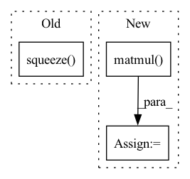

Pattern ID :6849
Before Change
rot = np.random.uniform(-rot_max, rot_max)
M = cv2.getRotationMatrix2D((W / 2, H / 2), rot * 180 / np.pi, 1.0)
img = data[i].squeeze()
mmg = mask[i].squeeze()
data[i] = cv2.warpAffine(img, M, (W, H), flags=cv2.INTER_CUBIC).reshape(C, H, W)
mask[i] = cv2.warpAffine(mmg, M, (W, H), flags=cv2.INTER_CUBIC).reshape(C, H, W)
T_aug += [torch.from_numpy(get_transform(0, 0, -rot))]
else:After Change
M = cv2.getRotationMatrix2D((W / 2, H / 2), rot * 180 * j / np.pi, 1.0)
data[i] = cv2.warpAffine(img, M, (W, H), flags=cv2.INTER_CUBIC).reshape(C, H, W)
mask[i] = cv2.warpAffine(mmg, M, (W, H), flags=cv2.INTER_CUBIC).reshape(1, H, W)
T_21[i - 1] = np.matmul( T, T_21[i - 1])
batch["data"] = torch.from_numpy(data)
batch["mask"] = torch.from_numpy(mask > 0.5).type(batch["data"].dtype) // make into a binary mask
batch["T_21"] = torch.from_numpy(T_21)
return batchIn pattern: SUPERPATTERN
Frequency: 3
Non-data size: 3
Instances Fragment ID: 23215875
Project Name: utiasasrl/hero_radar_odometry
Commit Name: 69b518ec294c236dc4305129ec07282c5d2e007c
Time: 2021-03-04
Author: keenburn2004@gmail.com
File Name: datasets/transforms.py
M Class Name: AnonimousClass
N Class Name: AnonimousClass
M Method Name: augmentBatch(2)
N Method Name: augmentBatch(2)
M Parent Class:
N Parent Class:
M File Name: datasets/transforms.py
N File Name: datasets/transforms.py
M Start Line: 8
M End Line: 28
N Start Line: 10
N End Line: 29
Before Change
out = _stateless.functional_call(self._model, {n: p for n, p in zip(keys, params)}, x)
return out
self._j_list: tuple[torch.Tensor] = torch.autograd.functional.jacobian(func, values, create_graph=True)
self._j_list = [j.squeeze( 1) .flatten(start_dim=1) for j in self._j_list] // remove hidden and predict bias dimensions
// vectorized hessian (https://github.com/pytorch/pytorch/issues/49171)
def loss(*params):After Change
// create hessian approximation
for i, j in enumerate(self._j_list):
j = j.flatten(end_dim=len(self._j_list[i].shape)-len(d_p_list[i].shape)-1).flatten(start_dim=1) // (NC)x(BCHW)
h = j.T.matmul( j)
self._h_list.append(h)
else:
// vectorized hessian (https://github.com/pytorch/pytorch/issues/49171) Fragment ID: 23215877
Project Name: hahnec/torchimize
Commit Name: d65b33c9e39df589093da6cf91b8998beb6aead2
Time: 2022-07-23
Author: christopher.hahne@unibe.ch
File Name: torchimize/optimizer/gna_opt.py
M Class Name: GNA
N Class Name: GNA
M Method Name: step(3)
N Method Name: step(3)
M Parent Class: Optimizer
N Parent Class: Optimizer
M File Name: torchimize/optimizer/gna_opt.py
N File Name: torchimize/optimizer/gna_opt.py
M Start Line: 58
M End Line: 87
N Start Line: 62
N End Line: 84
Before Change
mat_1 = torch.matmul(torch.transpose(self.__feature_list, 0, 1), self.__feature_list)
target = torch.unsqueeze(self.__target_list, dim=0)
mat_2 = torch.matmul(torch.transpose(self.__feature_list, 0, 1), torch.transpose(target, 0, 1))
return torch.unsqueeze(torch.squeeze( torch.matmul(torch.inverse(mat_1), mat_2), dim=1) , dim=0)
def get_parameters(self):
return self.__parametersAfter Change
mat_1 = np.matmul(self.__feature_list.T, self.__feature_list)
target = np.expand_dims(self.__target_list, axis=0)
mat_2 = np.matmul(self.__feature_list.T, target.T)
mat_3 = np.matmul( np.linalg.inv(mat_1), mat_2)
return np.expand_dims(np.squeeze(mat_3, axis=1), axis=0)
def get_parameters(self): Fragment ID: 23215869
Project Name: govindansriram/cobraml
Commit Name: f0db299c51b0dc3f67917bac00f46a342eaa6fe2
Time: 2021-07-27
Author: sriramgovindanwork@gmail.com
File Name: Regression/Linear.py
M Class Name: LinearRegression
N Class Name: LinearRegression
M Method Name: normal_eqt(1)
N Method Name: normal_eqt(1)
M Parent Class:
N Parent Class:
M File Name: Regression/Linear.py
N File Name: Regression/Linear.py
M Start Line: 22
M End Line: 25
N Start Line: 34
N End Line: 39